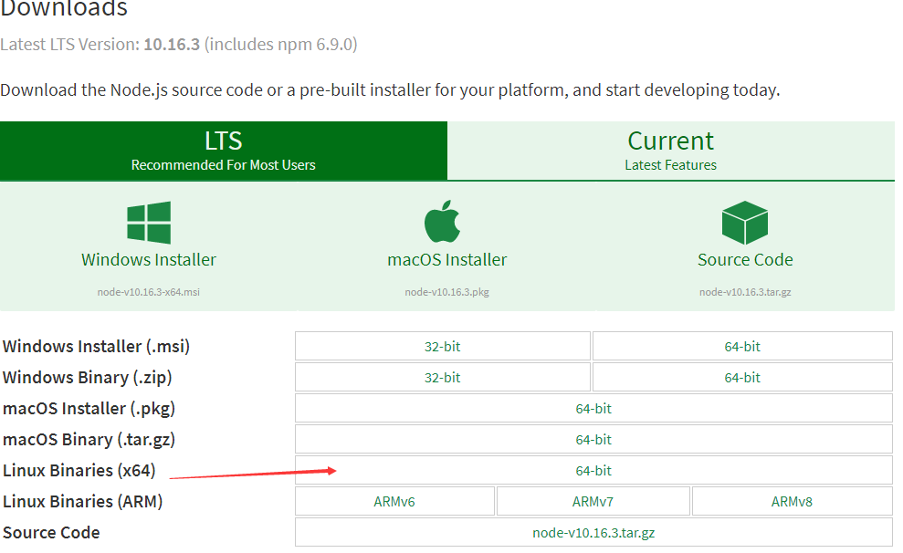
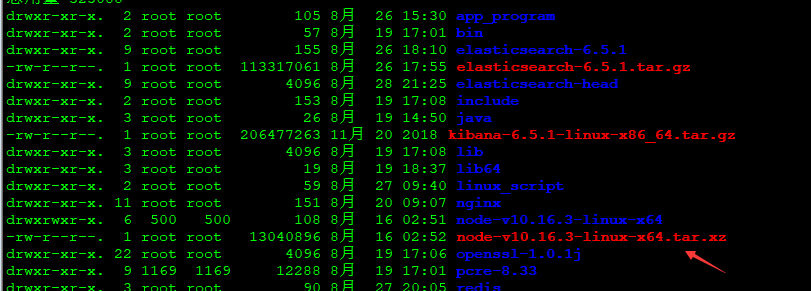
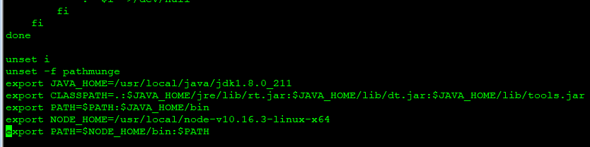
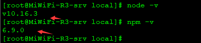
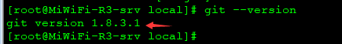
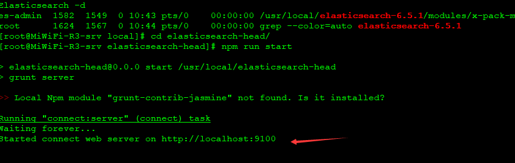
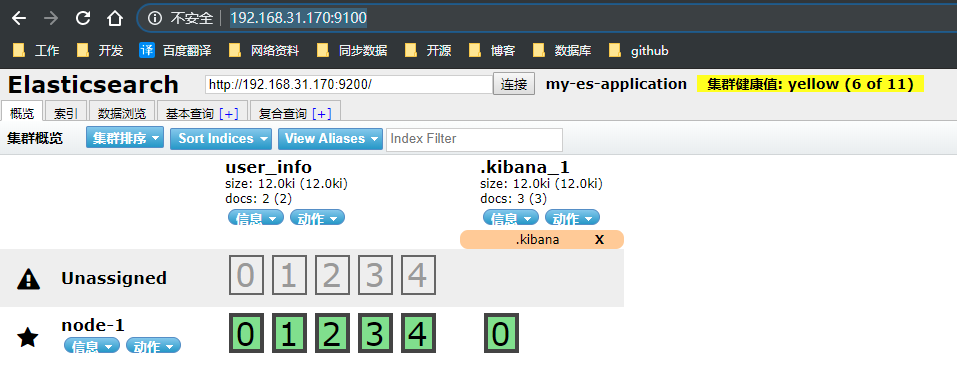

https://nodejs.org/en/download/

选择对应的版本，右键复制下载链接，进入linux目录，切换到要安装目录的磁盘。这里我们软件安装在/usr/local目录下，执行如下命令下载安装包
cd /usr/local/
wget https://nodejs.org/dist/v10.16.3/node-v10.16.3-linux-x64.tar.xz下载完之后可以在磁盘目录看到已经下载完成的压缩包

tar -xJf node-v10.16.3-linux-x64.tar.xz vi /etc/profile在文件最后面追加node.js环境变量
export NODE_HOME=/usr/local/node-v10.16.3-linux-x64
export PATH=$NODE_HOME/bin:$PATH
source /etc/profilenode -v
npm -v
看到上图所示说明node.js配置安装成功！
安装head插件需要下载安装包，但是通过git下载，所以我们首先需要在系统安装git插件，然后才能进行下载安装
yum install -y gitgit --version看到如下图所述说明git插件安装成功

git clone git://github.com/mobz/elasticsearch-head.git
cd elasticsearch-head/
npm installcd elasticsearch-6.5.1/config/
vi elasticearch.yml在配置文件末尾添加如下内容，重新启动elasticsearch服务
http.cors.enabled: true
http.cors.allow-origin: "*"cd elasticsearch-head/
npm run start
可以看到head插件默认占用9100端口，浏览器输入：http://192.168.31.170:9100/即可显示head插件界面

输入elasticsearch服务地址，点击连接右边显示黄色信息说明连接成功，至此elasticsearch-head插件安装成功